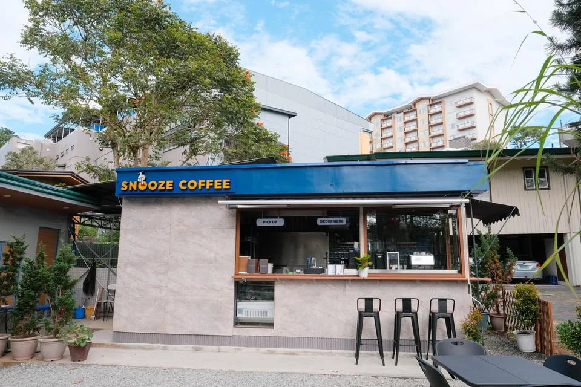
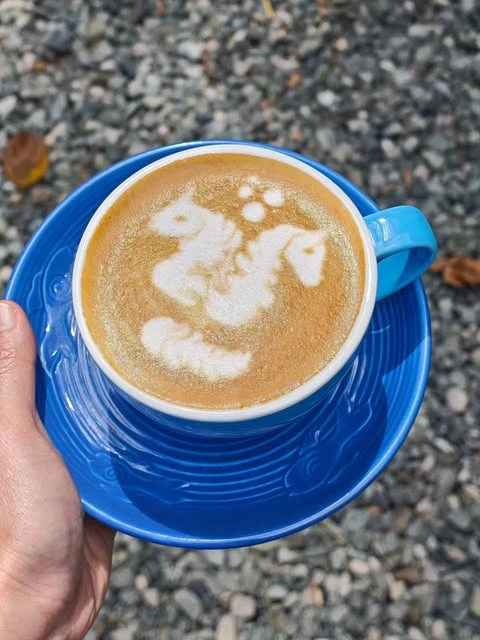
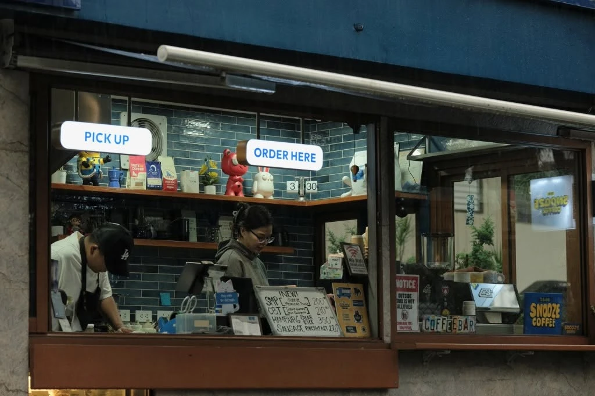
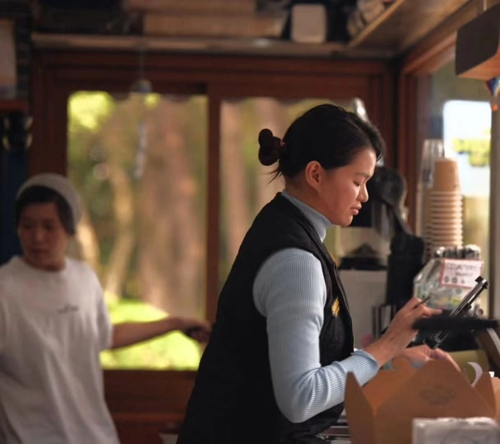
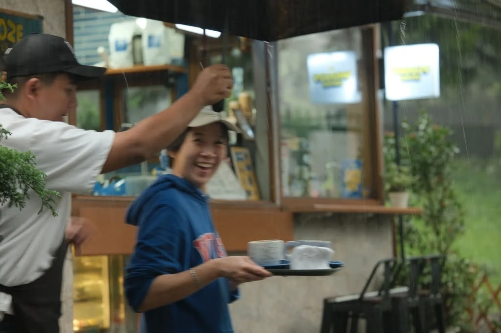
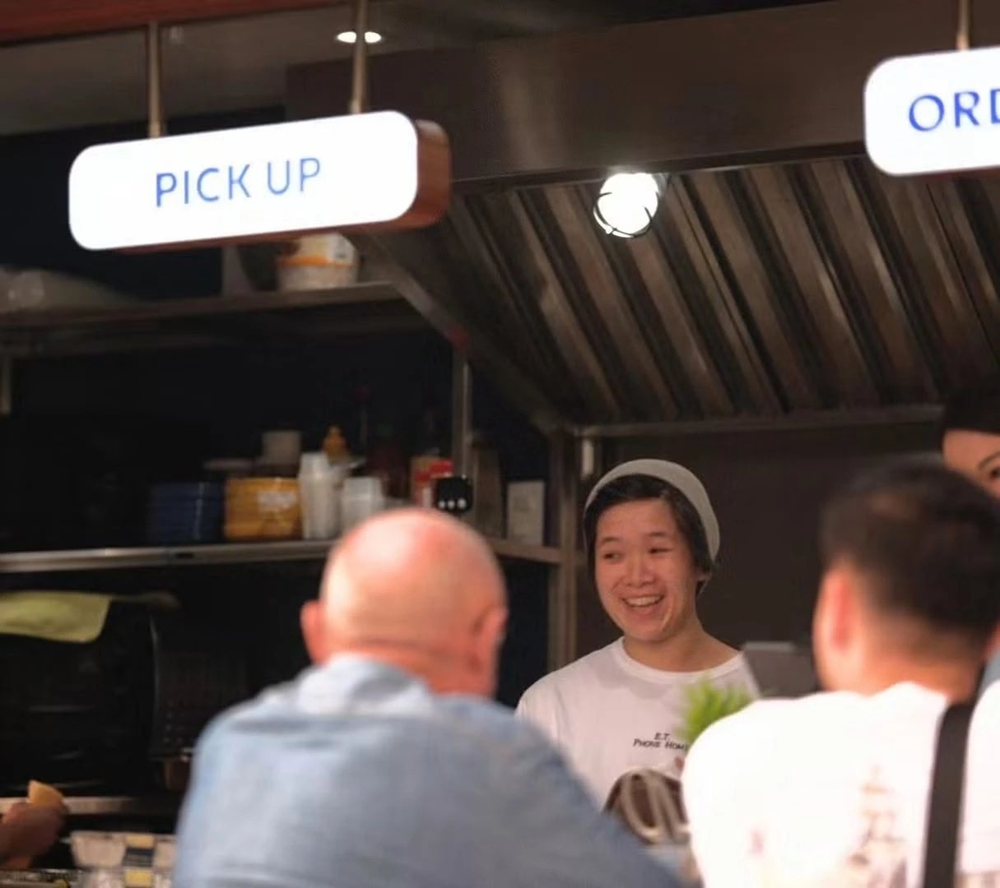
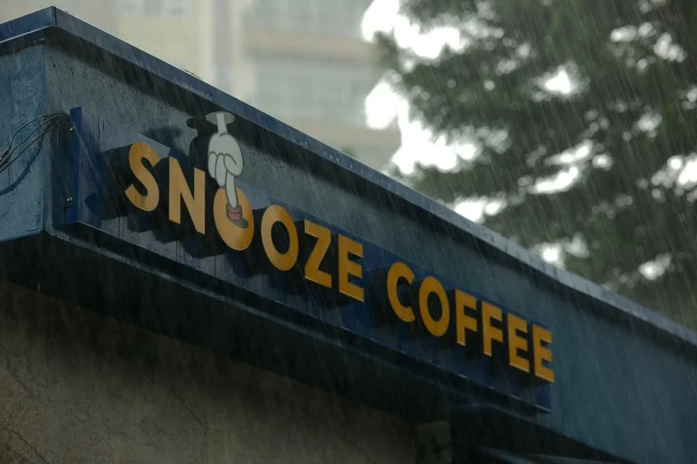

Drinks with a little personality.
There’s room for your usual coffee and for the strawberry matcha you’ve been meaning to try.
LEONARD WOOD ROAD · BAGUIO CITY
Coffee, familiar faces, and a little room in your day.

HELLO FROM OUR CORNER.
A cup.
A catch-up.
A good afternoon.
SMALL PLACE. PLENTY OF HEART.
Snooze Coffee is a community-focused café in Baguio. We care about a good cup, locally sourced beans, and making people feel welcome.
Our spot on Leonard Wood Road is made for the little moments: a drink on the way somewhere, a bite with a friend, or an afternoon that doesn’t need an itinerary.
Order something familiar. Try something a bit different. We’re glad you stopped by.
Find your next orderA LITTLE LOOK AROUND
The counter. The people.
The everyday in between.





AROUND HERE
There’s room for your usual coffee and for the strawberry matcha you’ve been meaning to try.
A cookie, a snack, or something more filling. Stay for a bite if you have the time.
Come with your friends. Meet someone new. Say hello at the counter.
LIFE AT SNOOZE
SAME CORNER. YOUR NEXT CUP.